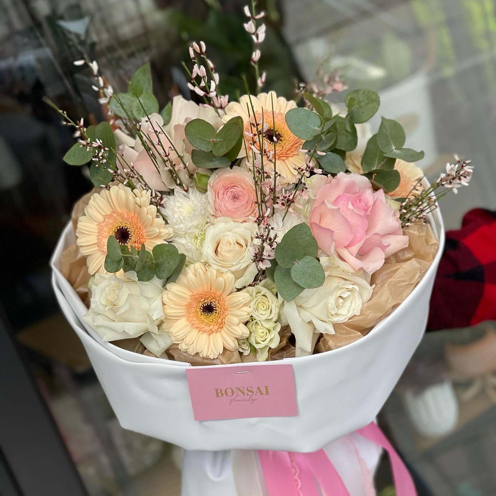
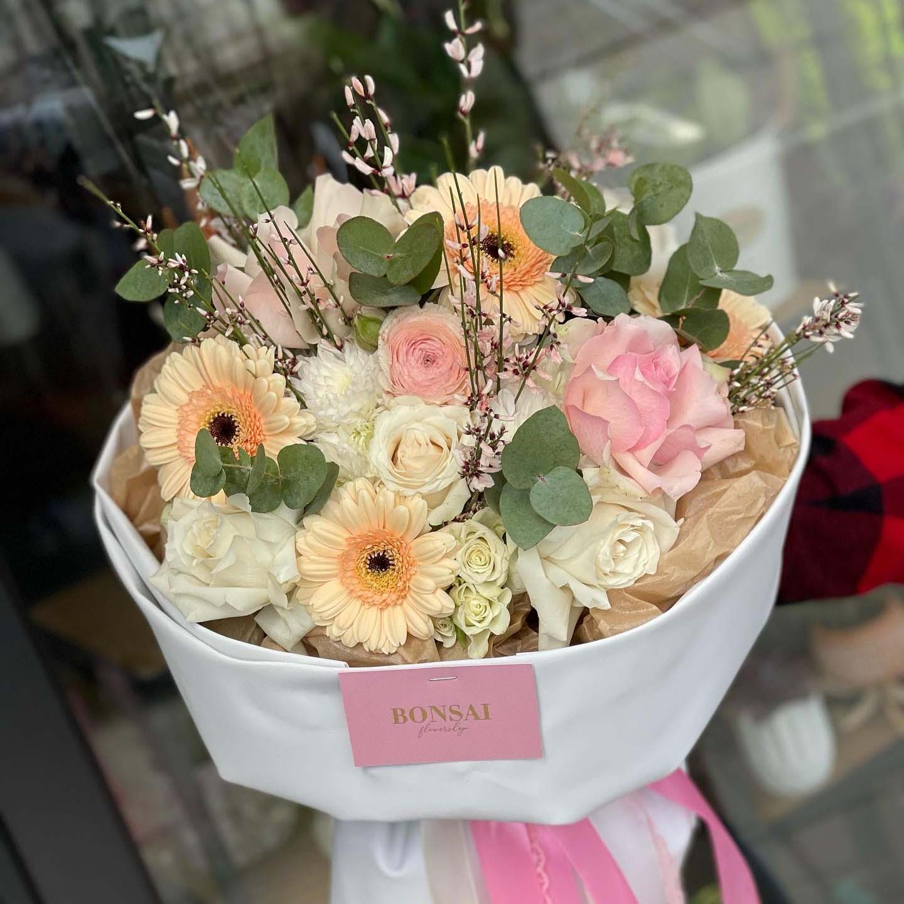

Iznenadite svoje voljene predivnim
znakom pažnje
CVEĆE
za sve prilike
Iznenadite svoje voljene predivnim
znakom pažnje
CVEĆE
za sve prilike

Posvećeni smo pružanju najlepšeg i najkvalitetnijeg cveća za naše cenjene kupce. Sa ponosom smo deo cvetne industrije već dugi niz godina i s ljubavlju stvaramo prelepe cvetne aranžmane i bukete.
Pružamo širok izbor svežeg rezanog cveća koje pažljivo biramo od pouzdanih dobavljača. Svaka cvetna kompozicija koju stvaramo je umetničko delo, kreirano sa pažnjom i kreativnošću.
Bez obzira da li želite elegantan buket za poklon, prefinjeni aranžman za venčanje ili dekoraciju za poseban događaj, naš tim cvećara će se pobrinuti da svaki detalj bude savršen.
Naša misija je da vam omogućimo da izrazite svoje emocije, proslavite posebne trenutke i stvorite nezaboravne uspomene kroz magiju cvetnih aranžmana.

 

Cvet čini red radijalnih latica, a središte je zanimljive kontrastne boje. Cvet podseća na običnu ivančicu i može cvetati u raznim nijansama od plave, žute, ljubičaste i ružičaste pa sve do bele boje. Ako nemaju dovoljno svetlosti, posebno noću, latice se zatvaraju. Lišće je sivo-zelene boje, nazubljeno na ivicama i kopljasto, a plod čini roška. Afrička ivančica prirodno raste u regionu Južne Afrike, a kod nas se često gaji kao celogodišnje cveće jer može da podnese niske temperature.
Istražite našu raznoliku kolekciju cvetnih aranžmana, svaki pažljivo kreiran kako bi dodao notu svežine i lepote vašim trenucima.
Bez obzira na priliku ili stil, naša paleta obuhvata bukete za posebne trenutke, elegantne minimalističke dizajne, luksuzne aranžmane i još mnogo toga.
Otkrijte svoju idealnu cvetnu priču danas.

NARUČI
svoj buket